Unit 7 Classification and Alternative Representations
This practical has 2 parts: the main practical on geodemographic classification and an optional section on alternative representations with cartograms. You are expected to undertake the Classification practical and the other part on Cartograms is there for you to play with if you are interested.
7.1 Classification
7.1.1 Overview
This part of the practical is based on https://rpubs.com/chrisbrunsdon/14998 as reported in Brunsdon et al (2018) and this conference paper https://www.gla.ac.uk/media/media_401738_en.pdf.
You will need to load the following packages for this practical. Some may need installing but you are even more experienced at this now.
library(lubridate)
library(utils)
library(plyr)
library(RColorBrewer)
library(sf)
library(tidyverse)You will need the following files in your working directory from the VLE: AllThemesTablesSA.csv, the R file create_vars.R and the Irish census small areas irish_small_areas.gpkg.
The raw data were downloaded from the Irish population census page:
- census attributes: http://www.cso.ie/en/census/census2011smallareapopulationstatisticssaps/
- census areas: http://www.cso.ie/en/media/csoie/census/documents/saps2011files/Complete_Set_Of_SAPS_2011.zip
You should check that data files are unzipped and in your working directory. The above links provide data for different spatial reporting units in Ireland. Here we will work at small area level.
First load the raw data into your R session - this is large!
## [1] 18488 767Next use the function in the create_vars.R script (that compute the derived variables). Notice the use of the source function to load in the code in the R file.
source("create_vars.R")
# this function transforms the data
SAVars <- CreateVariables(SAData)
dim(SAVars)## [1] 18488 41And have a look at the result
The CreateVariables function has grouped different census data attributes into 41 variables, expressed in percentage format, that we can use as the basis of some kind of geo-demographic classification.
We will use a k-means cluster analysis in order to develop the classification (Hartigan and Wong, 1979).
Now one of the problems with a cluster analysis of data large \(m\) (columns, attributes or variables) is that the clustering approach can fail to identify a division of the attribute space (recall the operation of k-means from the lecture).
7.1.2 PCA transformation
Because of this issue, data reduction techniques are frequently used such as a Principal Components Analysis, or PCA. This is a very common operation but essentially what a PCA tries to do is to identify orthogonal components within the multivariate / multi-dimensional attribute space (there are 40 potential explanatory variables) that summarise the variation in the data attributes. The idea is that we can use some of the PCA components, as summaries of the variables, as the inputs into the classification. Recall that what we are trying to do here is to group similar census areas.
Typically, 3 or 4 components found through a PCA will explain 70-90% of the variation in the data.
The code above creates the PCA and lists the proportion of variance explained by each individual component. To determine how many of the components The next step is to investigate the cumulative amount of variance explained.
## Comp.1 Comp.2 Comp.3 Comp.4 Comp.5 Comp.6 Comp.7 Comp.8 Comp.9
## 0.2444728 0.3850054 0.4731222 0.5467045 0.5913962 0.6274209 0.6561050 0.6835007 0.7081846
## Comp.10 Comp.11 Comp.12 Comp.13 Comp.14 Comp.15 Comp.16 Comp.17 Comp.18
## 0.7320644 0.7530682 0.7737740 0.7928943 0.8115662 0.8284073 0.8447404 0.8598050 0.8736685
## Comp.19 Comp.20 Comp.21 Comp.22 Comp.23 Comp.24 Comp.25 Comp.26 Comp.27
## 0.8871886 0.8997834 0.9113383 0.9222372 0.9324414 0.9416523 0.9496740 0.9564315 0.9627463
## Comp.28 Comp.29 Comp.30 Comp.31 Comp.32 Comp.33 Comp.34 Comp.35 Comp.36
## 0.9684955 0.9737239 0.9782914 0.9822813 0.9857684 0.9886730 0.9911977 0.9936910 0.9959040
## Comp.37 Comp.38 Comp.39 Comp.40
## 0.9976004 0.9987066 0.9996529 1.0000000Here we can see that the first 14 components account for 81.2% of the variance in the data. We will use these for a k-means cluster analysis.
7.1.3 \(k\)-means Cluster Analysis
One of the critical issues is how many clusters A further issue is the size of the clusters. One problem frequently occurring with \(k\)-means cluster analysis is that very unusual cases tend to form very small clusters. This is because of the nature of the clustering operation which seeks to minimise the within-cluster variation (such as is measured through the sum of squares of the variables), and small groups of similar but outlying observations contribute highly to this quantity unless they are assigned their own cluster. This sometimes means that increasing the number of clusters tends to create these very small ‘outlier’ clusters.
The code below evaluates different clusters sizes - from 1 to 100 which is passed to the centers parameter in the kmeans function - and calculates the within sum of squares and the smallest number of census areas in each cluster. These are put into the wss and smallest.clus R objects respectively.
Note that this takes time so progress is printed out for each 10%.
library(lubridate)
library(utils)
set.seed(1234) # Reproducible outcome
smallest.clus <- wss <- rep(0, 100) # define 2 variables
for (i in 1:100) {
clus <- kmeans(PCA$scores[, 1:14], centers = i, iter.max = 100, nstart = 20)
wss[i] <- clus$tot.withinss
smallest.clus[i] <- min(clus$size)
if (i%% 10 == 0) cat("progress:", i, "% \n")
}## progress: 10 %## progress: 20 %## progress: 30 %
## progress: 40 %
## progress: 50 %
## progress: 60 %## progress: 70 %## progress: 80 %
## progress: 90 %## progress: 100 %We can now plot the sums of squares and the cluster sizes. These are useful diagnostics.
plot(1:100, wss[1:100], type = "h", main = "Cluster Scree Plot", xlab = "Number of Clusters",
ylab = "Within Cluster Sum of Squares")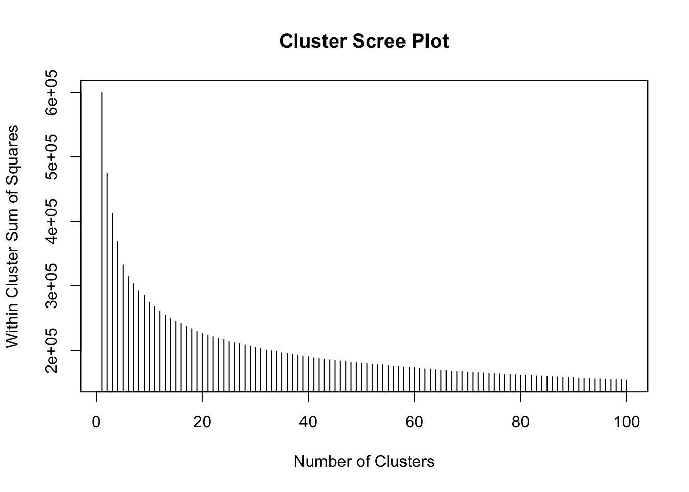
Figure 7.1: Fig1. A scree plot of WSS against cluster number.
This shows that as the number of clusters increases, the within cluster variance decreases - as you would expect - each group becomes more homogeneous as the number of groups increases.
Then the smallest cluster size against the total number of clusters can be plotted. This shows the tipping point at which cluster size starts to drop off - again indicating very small, niche and not very universal clusters:
plot(1:100, smallest.clus[1:100], type = "h", main = "Smallest Cluster Plot",
xlab = "Number of Clusters", ylab = "Smallest Cluster Size")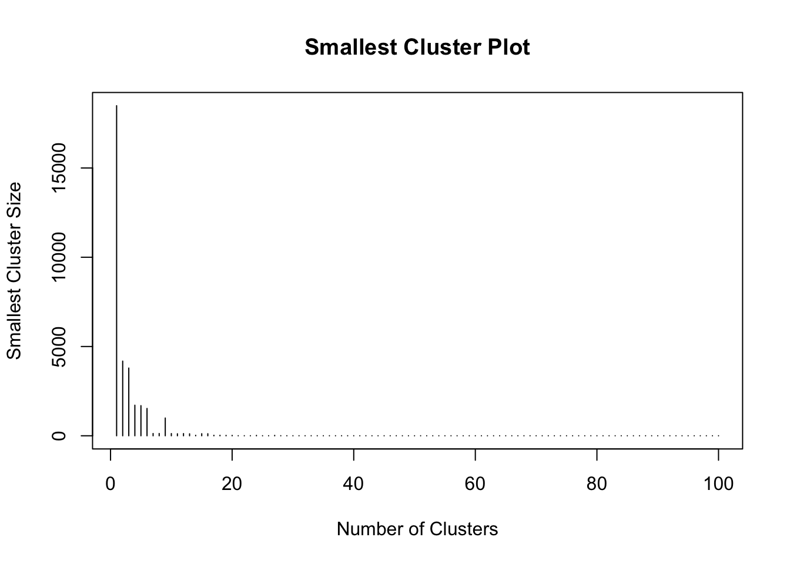
Figure 7.2: Fig2. The smallest cluster size counts against cluster number.
From this it seems that the ‘very small cluster’ phenomenon starts to occur when the number of clusters exceeds 18 - assuming a very small cluster has fewer than 15 small areas.
Here, the classification for 18 clusters is re-calculated - this quantity is stored in n.clus in the code below. This will be used as it provides a reasonable trade off between within cluster sum of squares and minimum cluster size.
7.1.4 Diagnostics
The purpose of this section is to identify the characteristics of the clusters found above. Since the above computation applied the analysis to principal components it is helpful to characterise the clusters in terms of the original variables used in the PCA. To do this, firstly the \(z\)-scores of each variable for the cluster centroids are computed. If the initial variable is \(x\), then the \(z\)-score is given by
\[ z = \frac{x - \bar{x}}{s} \]
where \(\bar{x}\) is the arithmetic mean of the \(x\) values in the data set, and \(s\) is the sample standard deviation defined by
\[ s = + \sqrt{\frac{\sum{(x - \bar{x})^2}}{n - 1}} \]
this standardisation allows values of each variable to be compared on a consistent scale - the \(z\)-score in each case has a mean of zero and a standard deviation of one. Here, the \(x\) values are actually cluster-wise mean values, whereas \(\bar{x}\) and \(s\) are computed for values for all Small Areas. This is useful for identifying which clusters have relatively high or low values of particular variables. The following code creates a set of \(z\) scores for each cluster.
# We need this for the 'ddply' function
library(plyr)
# Compute a data frame (one row per cluster) containing the means of each
# variable in that cluster
mean_by_cluster <- ddply(SAVars, .(SAclusters), numcolwise(mean))[, -1]
# Compute the column-wise means for *all* observations
mean_by_col <- apply(SAVars[, -1], 2, mean)
# Compute the column-wise *sample* sd's for *all* observations
sd_by_col <- apply(SAVars[, -1], 2, sd)
# Create the z-scores via the 'scale' function
z_scores <- scale(mean_by_cluster, center = mean_by_col, scale = sd_by_col)The above code used the ddply function in the plyr package. This is used to split the original input data (the SAVars data frame) by the SAclusters variable which indicates the cluster membership of each census areas. This is an example of a split-apply-combine operation. The data frame is split into a number of sub-frames according to the value of SAClusters, then an operation is applied to each sub-frame (in this case computing a list of column means - the expression numcolwise(mean) takes a function (mean) and creates a new function, that is then applied to each numeric column in the input data), and finally these are combined together to create a single data frame.
The result can be explored visually. The heatmap function provides a visual representation of the z_scores variable. It generates a grid-based image of the values in the two dimensional array. However, noting that the column and row labels are both categorical, non-ordinal variables. Although he cluster numbers are integers, no significance is attached to their values - they merely serve as labels. This implies that both rows and columns may be permuted, without loss of generality. Doing this can sometimes aid the clarity of the visualisation. In this case, rows are re-ordered on the basis of applying a dendrogram ordering algorithm to the result of a hierarchical clustering algorithm, where the values along each row are treated as a vector. The clustering is carried out on the basis of Euclidean distance between the vectors using the complete linkage [3] approach, and the re-ordering is based on the reorder.dendrogram function provided in the R stats package provided in standard distributions of R. As noted, this re-ordering is applied to the rows, but following this, a re-ordering is also applied to the columns - this time treating the columns as vectors, and computing Euclidean distances between these.
heatmap(t(z_scores),
scale = 'none',
col=brewer.pal(6,'BrBG'),
breaks=c(-1e10,-2,-1,0,1,2,+1e10),
xlab='Cluster Number',
add.expr=abline(h=(0:40)+0.5,v=(0:n.clus)+0.5,col='white'))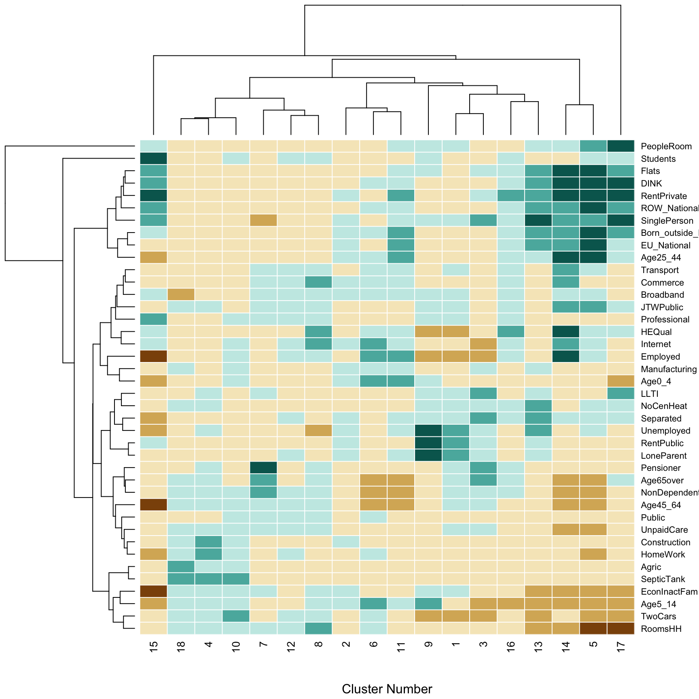
Figure 7.3: Fig3. The contribution of different variables to the geodemographic classification of Ireland.
The shading of the elements of the heatmap is based on the Brewer BrBG palette - see e.g. http://colorbrewer2.org - with category cut-off points at -2, -1, 0, 1, and 2. Thin white lines are added to the grid so that the divisions between individual rows and columns can be seen using the abline function. Finally, the dendrograms are actually drawn against the axes, so that hierarchical groups of the \(k\)-means clusters, and the of variables can be seen. The former is helpful in providing a hierarchical higher-level grouping of clusters, based on their similarities. It is also a useful detector for ‘clusters of outliers’ as described earlier. For example, the cluster dendrogram in the figure above suggests that cluster 17 is unusual (note that hierarchically, it is split away into a one element group before any other divisions are encountered), and a similar observation can be made for cluster 15. This dendrogram for the variable also suggests that the ‘People per room’ is unusual as it is quite distinct from all others in terms of its representation across the clusters.
7.1.5 Mapping
It would be interesting to map the spatial distribution of the clusters. The Irish census Small Areas file can be loaded using the sf package:
You could map these to have a quick look but this is a large file and the map might take time to render! So it is your choice whether you run the code below or not.
In order to map the geodemographic clusters, the spatial data and the data containing the 18 clusters need to be linked.
In an earlier step the CreateVariables function was used to create the SAVars data frame. This has a column indicating the ID code of each Small Area called GEOGID and the spatial data has a similarly named variable:
## [1] "GEOGID" "Age0_4" "Age5_14"
## [4] "Age25_44" "Age45_64" "Age65over"
## [7] "EU_National" "ROW_National" "Born_outside_Ireland"
## [10] "Separated" "SinglePerson" "Pensioner"
## [13] "LoneParent" "DINK" "NonDependentKids"
## [16] "RentPublic" "RentPrivate" "Flats"
## [19] "NoCenHeat" "RoomsHH" "PeopleRoom"
## [22] "SepticTank" "HEQual" "Employed"
## [25] "TwoCars" "JTWPublic" "HomeWork"
## [28] "LLTI" "UnpaidCare" "Students"
## [31] "Unemployed" "EconInactFam" "Agric"
## [34] "Construction" "Manufacturing" "Commerce"
## [37] "Transport" "Public" "Professional"
## [40] "Internet" "Broadband"## [1] "NUTS1" "NUTS1NAME" "NUTS2" "NUTS2NAME" "NUTS3" "NUTS3NAME"
## [7] "COUNTY" "COUNTYNAME" "CSOED" "OSIED" "EDNAME" "SMALL_AREA"
## [13] "GEOGID" "MALE2011" "FEMALE2011" "TOTAL2011" "PPOCC2011" "UNOCC2011"
## [19] "VACANT2011" "HS2011" "PCVAC2011" "CREATEDATE" "geom"We can use one of the join functions in dplyr, part of the tidyverse, to link the spatial data and the classes in SAclusters if we attach this from SAVars.
First link the classes and the SA code:
# attach the small area code to the classification
df = data.frame(GEOGID = SAVars$GEOGID,
Class = SAclusters)
# check
head(df)## GEOGID Class
## 1 A017001001 10
## 2 A017002001 10
## 3 A017002002 10
## 4 A017002003 10
## 5 A017003001 18
## 6 A017003002 10Then link the result to the spatial data using the same piping syntax as in Week 7:
## Simple feature collection with 6 features and 23 fields
## Geometry type: MULTIPOLYGON
## Dimension: XY
## Bounding box: xmin: 268327.6 ymin: 137755.2 xmax: 315202.7 ymax: 179397
## Projected CRS: TM65 / Irish Grid
## NUTS1 NUTS1NAME NUTS2 NUTS2NAME NUTS3 NUTS3NAME COUNTY COUNTYNAME
## 1 IE0 Ireland IE02 Southern and Eastern IE022 Mid-East 15 Wicklow County
## 2 IE0 Ireland IE02 Southern and Eastern IE024 South-East (IE) 01 Carlow County
## 3 IE0 Ireland IE02 Southern and Eastern IE024 South-East (IE) 01 Carlow County
## 4 IE0 Ireland IE02 Southern and Eastern IE024 South-East (IE) 01 Carlow County
## 5 IE0 Ireland IE02 Southern and Eastern IE024 South-East (IE) 01 Carlow County
## 6 IE0 Ireland IE02 Southern and Eastern IE024 South-East (IE) 01 Carlow County
## CSOED OSIED EDNAME SMALL_AREA GEOGID MALE2011 FEMALE2011 TOTAL2011 PPOCC2011
## 1 15039 257005 Aughrim 257005002 A257005002 137 138 275 84
## 2 01054 017049 Tinnahinch 017049001 A017049001 186 176 362 111
## 3 01053 017032 Marley 017032001 A017032001 194 173 367 121
## 4 01054 017049 Tinnahinch 017049002 A017049002 75 75 150 67
## 5 01054 017049 Tinnahinch 017049003 A017049003 84 81 165 64
## 6 01015 017005 Ballyellin 017005002 A017005002 105 99 204 71
## UNOCC2011 VACANT2011 HS2011 PCVAC2011 CREATEDATE Class geom
## 1 18 15 102 14.7 27-03-2012 10 MULTIPOLYGON (((311852.7 17...
## 2 25 24 136 17.6 27-03-2012 10 MULTIPOLYGON (((272943.1 13...
## 3 8 5 129 3.9 27-03-2012 18 MULTIPOLYGON (((276637.4 14...
## 4 29 29 96 30.2 27-03-2012 3 MULTIPOLYGON (((270715 1433...
## 5 16 14 80 17.5 27-03-2012 7 MULTIPOLYGON (((270995 1436...
## 6 6 5 77 6.5 27-03-2012 10 MULTIPOLYGON (((270502 1527...Finally the result can be mapped:
ggplot(sa)+
geom_sf(aes(fill = as.factor(Class)), col = NA) +
scale_fill_discrete(name = "Class") +
theme_minimal()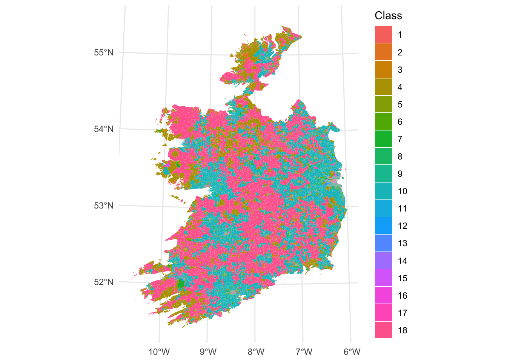
Figure 7.4: Fig4. A geodemographic classification of small areas in Ireland.
7.1.6 Further Resources
Overviews of PCA:
- https://towardsdatascience.com/tidying-up-with-pca-an-introduction-to-principal-components-analysis-f876599af383
- https://towardsdatascience.com/a-one-stop-shop-for-principal-component-analysis-5582fb7e0a9c
- https://builtin.com/data-science/step-step-explanation-principal-component-analysis
- https://www.math.umd.edu/~petersd/666/html/iris_pca.html
Overviews of k-means classification:
7.1.7 References
Adnan, M., Longley, P.A., Singleton, A.D. and Brunsdon, C., 2010. Towards real‐time geodemographics: Clustering algorithm performance for large multidimensional spatial databases. Transactions in GIS, 14(3), pp.283-297.
Brunsdon, C., Longley, P., Singleton, A. and Ashby, D., 2011. Predicting participation in higher education: a comparative evaluation of the performance of geodemographic classifications. Journal of the Royal Statistical Society: Series A (Statistics in Society), 174(1), pp.17-30.
Brunsdon, C., Charlton, M. and Rigby, J.E., 2018. An Open Source Geodemographic Classification of Small Areas in the Republic of Ireland. Applied Spatial Analysis and Policy, 11(2), pp.183-204.
Hartigan, J. A. and Wong, M. A., 1979. A K-means clustering algorithm. Applied Statistics 28, 100–108.
Charlton, M. E., Openshaw S., Wymer C., 1985. Some new classifications of census enumeration districts in Britain: a poor man’s ACORN, Journal of Economic and Social Measurement, 13, 69-98
Sorensen, T., 1948. A method of establishing groups of equal amplitude in plant sociology based on similarity of species and its application to analyses of the vegetation on Danish commons, Biologiske Skrifter, 5, 1–34
Kaufman, L. and Rousseeuw, P. J., 1990. Finding Groups in Data: An Introduction to Cluster Analysis John Wiley and Sons, New York.
Gastner, M.T. and Newman, M. E. J., 2004. Diffusion-based method for producing density equalizing maps, Proceedings of the National Academy of Sciences, 101, 7499–7504.
Tufte, E.R., 1990, Envisioning Information, Graphics Press, Cheshire, CT
7.2 Optional: Alternative spatial visualisations
7.2.1 Overview
This part of the practical is based on Chapter 8 of Comber and Brunsdon (2020). It describes alternative approaches for visualizing spatial data using cartograms, hexagonal binning and tile maps. Alternative visualisations approaches for spatial data are needed because of the so-called invisibility problem, in which the characteristics or properties of small but important areas or units may be difficult to pick out or may obscured by other mapped features under classic cartographic representations. Cartograms provide a way to overcome the invisibility problem by distorting the reporting units in order to communicate data properties and trends.
You will need to have the following packages loaded into your R session:
You will need the following data in your working directory from the VLE: nottingham.gpkg
7.2.2 The invisibility problem
Many of the spatial areas we have used for analysis have used a consistent population-based reporting unit such as LSOAs and OAs. In large scale national spatial analyses, when values for those units are mapped, small areas with very large or very small values may be obscure, or if they are visible, their importance may be under-played. The figure below shows the distribution of the llti variable (the proportion of people with Limiting Long Term Illness - LLTI) across the LSOAs in Nottingham. However, what is not displayed is the full picture of LLTI. In this case then, an area based geography may be misleading. Reporting units are smaller in urban settings with the result that many of potentially important patterns are not obvious (LLTI is common in the major post-industrial urban conurbations, with small, dense LSOAs). Here the census geography is occluding information and preventing comparisons across different units. This exemplifies the problem of invisibility in choropleth mapping (Harris et al 2018), with important patterns obscured especially, not just because the reporting units are small but also because they have varying areal properties.
Load the data and then construct the plot:
ggplot(nottingham) +
geom_sf(aes(fill = llti)) +
scale_fill_distiller(palette = "GnBu",
name = "Limiting Long Term Illness") +
theme_minimal()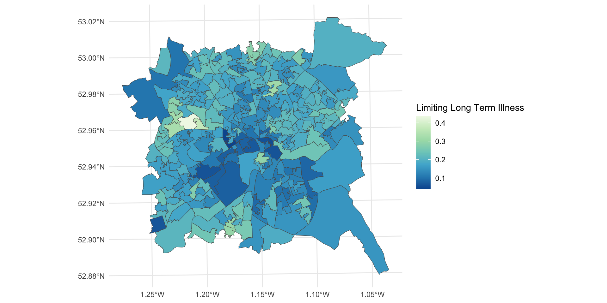
Figure 7.5: LLTI over LSOAs in Nottingham.
To overcome the invisibility problem, areal units can be distorted, converted, or even displayed in a different way but the problems of invisible dense regions of the map may persist, for example, if the data are converted to point symbols. Cartograms and Hexbins provide area based approaches for changing the geographic representation of areal reporting units whilst retaining some of the topology (adjacency between areas etc) and preserving all of the data values.
Key Points:
- Areal reporting units are commonly used in choropleth maps to show the spatial distribution of continuous variables;
- However, these are often designed to provide consistent reporting of population geography, with the result that smaller units may be suffer from the invisibility problem in densely populated regions;
- Cartograms have been proposed as a way of overcoming this problem.
7.2.3 Cartograms
Cartograms provide a way of revealing invisible places. They breaking the link between the size of units on the map and their actual physical size. Cartograms rescale units according to some attribute (e.g. llti). There is a relatively long literature on the use of cartograms, with perhaps Tobler (2004) providing the most accessible introduction to their history, with a more recent review in Nusrat and Kobourove (2016). There are a number of flavours of cartogram, as will be illustrated, but what they all seek to do is to transform spatial data / areal reporting units, by using the value of some property or variable, whilst maintaining as much of the topology (i.e. the spatial relationships between units) of the individual units and the whole dataset as possible. That is, the geography is changed in order to better describe the spatial distribution of the (usually) area based features, but the spatial relationship between and relative positioning of individual areas remains consistent.
There are 3 basic types of cartogram, each of which is illustrated below:
- Contiguous cartograms
- Non-contiguous cartograms
- Dorling cartograms
These will be explored using the cartogram package and the unemployed variable in the nottingham dataset loaded earlier:
# create a map of the original data
p1 =
ggplot(nottingham) +
geom_sf(aes(fill = unemployed)) +
scale_fill_viridis_c() +
theme_minimal() + labs(title = "Original")
p1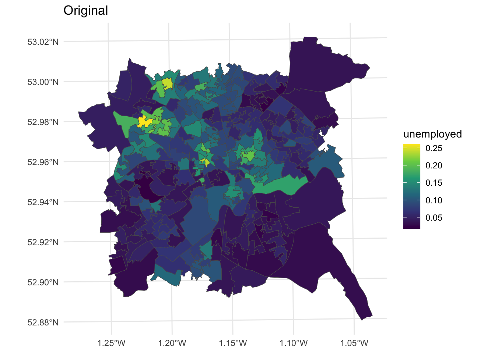
Figure 7.6: Unemployment rates over LSOAs in Nottingham.
The contiguous cartogram is the classic example. It maintains the topology (connectivity) between adjacent areas, but re-sizes them according to the attribute value of interest. It tries to maintain the original shape of each area but inevitably re-sizing comes at a distortion cost. A key assumption is that the original areas have some sort of meaning or are familiar to the viewer. Indeed the distortions only have meaning if the viewer is familiar with the original representation and therefore able to interpret the distortion. In this case the cartogram package makes use of the rubber sheet distortion algorithm (Dougenik et al,1985) although the most widely used is probably the density equalizing cartogram (Gastner and Newman, 2004).
library(cartogram)
# contiguous cartogram
n_cart <- cartogram_cont(nottingham, "unemployed", itermax=10)
p2 =
ggplot(n_cart) +
geom_sf(aes(fill = unemployed)) +
scale_fill_viridis_c() +
theme_minimal() + labs(title = "Contiguous")
p2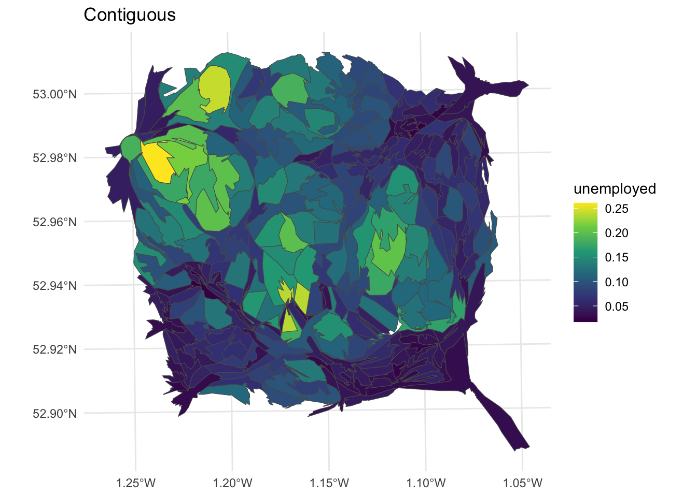
Figure 7.7: Nottingham unemployment rates using a contiguous cartogram.
The non-contiguous cartogram simply re-sizes areas according to the value of interest. Each area or polygon is displayed separately, with the loss of loss of adjacency and topology, although this can be inferred by including the original polygon outlines. The cartogram package code uses the non-contiguous area approach of Olson (1975). The advantages of this approach are that original form of the map is preserved and the need to be familiar with the original interpret the cartogram is reduced. But small areas with large values are simply are only distinguished from their lower valued neighbours by a reduction in the emphasis placed on those neighbours.
# noncontiguous cartogram
n_ncart <- cartogram_ncont(nottingham, "unemployed")
p3 =
ggplot(n_ncart) +
geom_sf(aes(fill = unemployed)) +
scale_fill_viridis_c() +
theme_minimal() + labs(title = "Non-Contiguous")
p3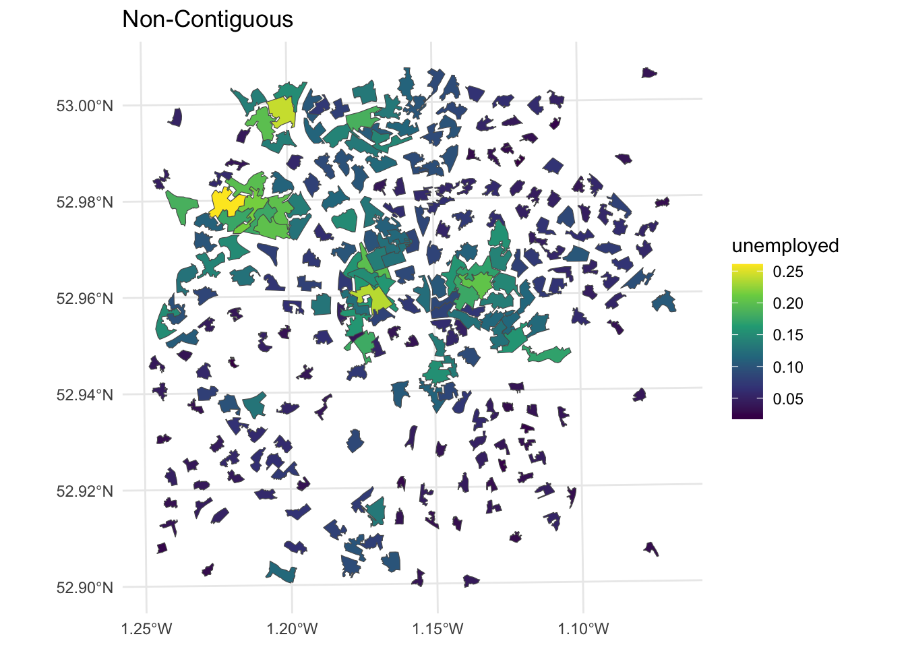
Figure 7.8: Nottingham unemployment rates using a non-contiguous cartogram.
Dorling cartograms (Dorling, 1996) create non-overlapping symbols that are sized in proportion to the data values (proportional symbols). They use proportional circles, for which a spatial arrangement as close to the original is iteratively sought, preserving some of the topology. This also requires some playing with the cartogram_dorling function parameters to get a cartogram that preserves location.
# dorling cartogram
# without parameter tweaking!
# n_dorl <- cartogram_dorling(nottingham, "unemployed")
# with parameter tweaking!
n_dorl <- cartogram_dorling(nottingham,
"unemployed", k = 0.5, 1, 5000)
p4 =
ggplot(nottingham) + geom_sf(col = "lightgrey")+
geom_sf(data = n_dorl, aes(fill = unemployed)) +
scale_fill_viridis_c() +
theme_minimal() + labs(title = "Non-Contiguous")
p4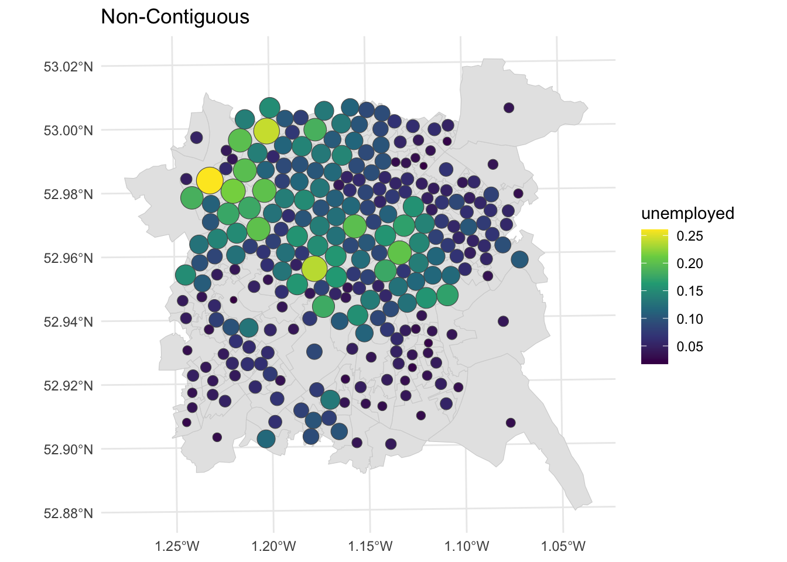
Figure 7.9: Nottingham unemployment rates using a Dorling cartogram.
We can examine all of these together using the plot_grid function:
Different flavours of cartograms provide a way to overcome the invisibility problem in standard choropleth maps by spatially exaggerating areas with high values and reducing the map space given to areas with low values. However, all cartograms but especially contiguous cartograms, impose a high level of distortion - the distortion problem (Harris et al, 2018), changing the shape and locations of areas on the map, such that areas with the lowest values are both allocated the lowest amount of map space and distorted. They can also massively over or under emphasise the difference between values at different locations, resulting in different kinds of mis-representation.
This presents a challenge: cartograms can fail if the level of geographical distortion makes the map difficult to interpret, despite the aim of improving the communication of spatial data. There are number of potential approaches for dealing with mis-representation. One critical but frequently overlooked solution is make sure the original map is always presented alongside the cartogram.
Another is to carefully rescale the attribute value that is being mapped in order to achieve an acceptable balance between invisibility and distortion, using square roots or logs of counts (squares or exponential for proportions). The code below creates contiguous cartograms scaled in this way as well as the original contiguous cartogram.
# rescale the value
nottingham$u_sq = (nottingham$unemployed)^3
nottingham$u_exp = exp(nottingham$unemployed)
# create cartograms
n_cart_sq <- cartogram_cont(nottingham, "u_sq", itermax=10)
n_cart_ex <- cartogram_cont(nottingham, "u_exp", itermax=10)
# create plots
p3 =
ggplot(n_cart_sq)+
geom_sf(aes(fill = u_sq)) +
scale_fill_viridis_c() +
theme_minimal()
p4 =
ggplot(n_cart_ex)+
geom_sf(aes(fill = u_exp))+
scale_fill_viridis_c() +
theme_minimal()
# plot with original
plot_grid(p1, p2, p3, p4, ncol = 2)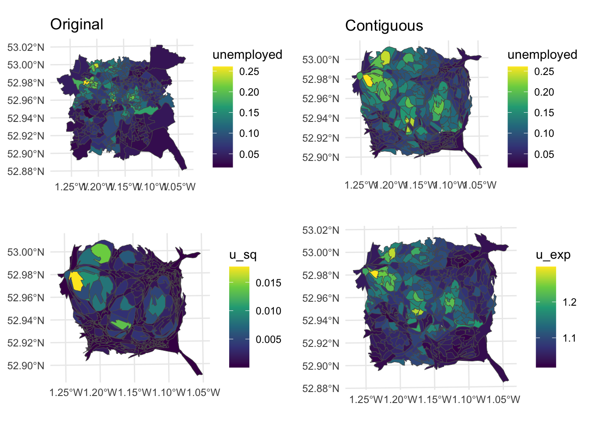
Figure 7.10: Alternative representations of the Unemployment rates in Nottingham using rescaled data with cartograms.
Key Points:
- Cartograms break the link between the mapped size of the reporting units on the map, and their actual physical size in reality;
- Areas (units) are rescaled areas according to some attribute, whilst seeking to preserve as much of the topology as possible (i.e. the spatial relationships between units);
- 3 types of cartogram were illustrated below - Contiguous, Non-contiguous and Dorling;
- The critical assumption in the use of cartograms is that the original units have some sort of meaning and / or are familiar to the viewer.
7.2.4 Hexagonal binning and Tile maps
A further solution is to use equal area tile maps - an equal area cartogram - giving equal space to all map areas and making them all equally visible. Commonly used tiles shapes include squares and hexagons, which are shaded in the same way as a normal choropleth. The geogrid package provides functions to do this.
First an initial grid is established of \(n\) grid cells, where \(n\) is the number of polygons in the input data. The arrangement of these mimics the coverage of the input data:
# create hex grid
hg = calculate_grid(nottingham, learning_rate = 0.05,
grid_type = "hexagonal", verbose = F)
# extract the spatial objects
hg_points = st_as_sf(hg[[1]])
hg_polys = st_as_sf(hg[[2]])The spatial properties of the result can be compared with the input as in the figure below:
p_orig =
ggplot(hg_polys) +
geom_sf(fill = NA, col = "black") +
theme_map()
p_hex =
ggplot(data = nottingham) +
geom_sf(col = "darkgrey", fill = NA, lwd = 0.5) +
theme_map()
plot_grid(p_orig, p_hex)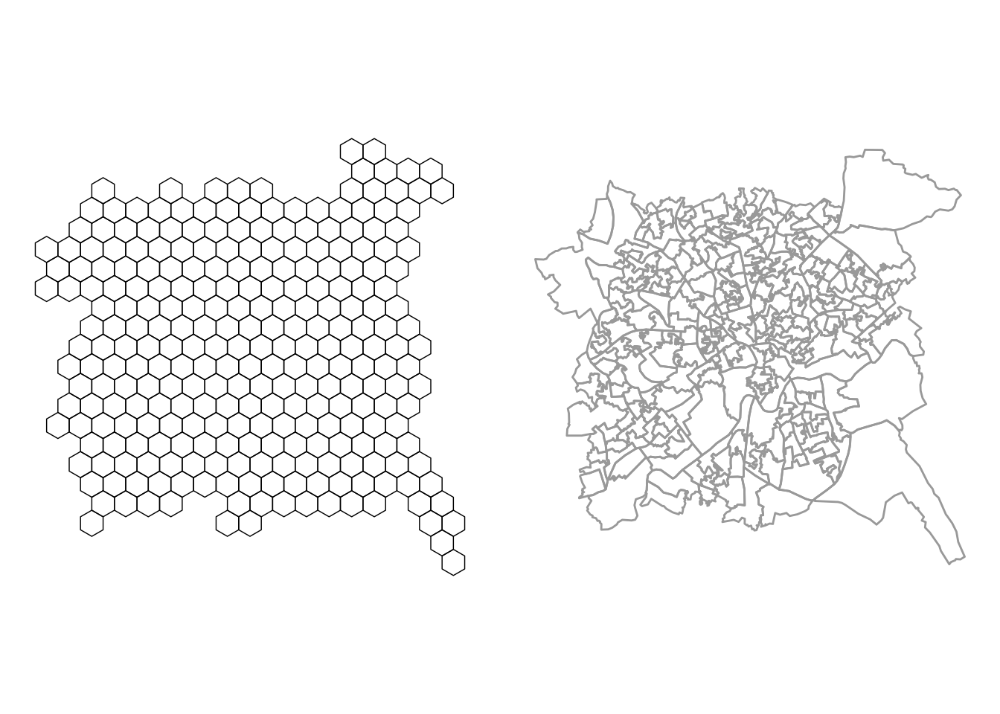
Figure 7.11: Hexbins for the Nottingham LSOAs.
Then each of the original area / polygons is allocated to the nearest grid. This requires a combinatorial optimization routine to assign each original area to a new grid cell, in such a way that the distances between the old and new locations are minimised across all locations using Kuhn’s Hungarian method (Kuhn, 1955). This can take time to solve:
And of course the same can be done to create a square grid, again this takes time:
# create square grid and assign data
sg = calculate_grid(nottingham, learning_rate = 0.05,
grid_type = "regular", verbose = F)
sg = assign_polygons(nottingham, sg)And then the results can be plotted:
p1 =
ggplot(nottingham) +
geom_sf(aes(fill = unemployed)) +
scale_fill_viridis_c(name = "Original") +
theme_map()
p2 =
ggplot(hg) +
geom_sf(aes(fill = unemployed)) +
scale_fill_viridis_c(name = "Hexagon bins") +
theme_map()
p3 =
ggplot(sg) +
geom_sf(aes(fill = unemployed)) +
scale_fill_viridis_c(name = "Square bins") +
theme_map()
plot_grid(p1, p2, p3, ncol = 3)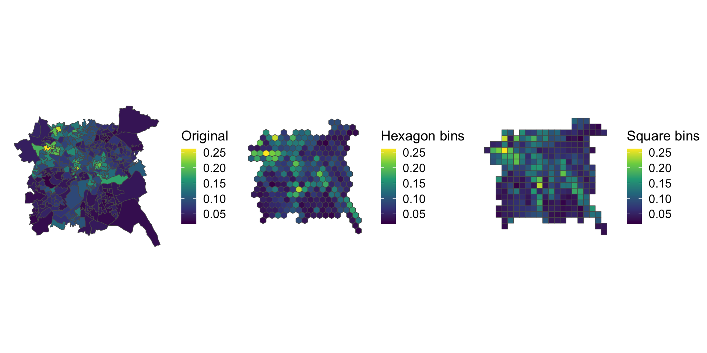
Figure 7.12: Alternative representations of the Unemployment rates in Nottingham using rescaled data with regular bins.
Key Points:
- Cartograms can suffer from distortion problems which over or under emphasise the differences between values at different locations;
- Such mis-representations can be overcome by presenting the original map always alongside the cartogram, by carefully rescaling the attribute value that is being mapped or by using equal area tile maps, which use heuristic searches to allocate each original area to a tile.
7.2.5 References
Comber Lex and Chris Brunsdon (2020). Geographical Data Science and Spatial Data Analysis: and Introduction in R, Sage, ISBN: 978-1526449351 (December 2020)
Dorling, Daniel. 1996. “Area Cartograms: Their Use and Creation.” Concepts and Techniques in Modern Geography (CATMOG).
Dougenik, James A, Nicholas R Chrisman, and Duane R Niemeyer. 1985. “An Algorithm to Construct Continuous Area Cartograms.” The Professional Geographer 37 (1): 75–81.
Gastner, Michael T, and Mark EJ Newman. 2004. “Diffusion-Based Method for Producing Density-Equalizing Maps.” Proceedings of the National Academy of Sciences 101 (20): 7499–7504.
Kuhn, Harold W. 1955. “The Hungarian Method for the Assignment Problem.” Naval Research Logistics Quarterly 2 (1-2): 83–97.
Harris, Richard, Martin Charlton, and Chris Brunsdon. 2018. “Mapping the Changing Residential Geography of White British Secondary School Children in England Using Visually Balanced Cartograms and Hexograms.” Journal of Maps 14 (1): 65–72.
Nusrat, Sabrina, and Stephen Kobourov. 2016. “The State of the Art in Cartograms.” In Computer Graphics Forum, 35:619–42. 3. Wiley Online Library.
Olson, Judy M. 1976. “Noncontiguous Area Cartograms.” The Professional Geographer 28 (4): 371–80.
Tobler, Waldo. 2004. “Thirty Five Years of Computer Cartograms.” ANNALS of the Association of American Geographers 94 (1): 58–73.